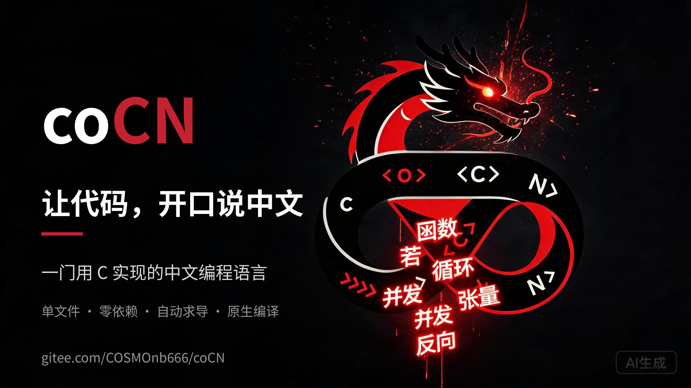

coCN
让代码，开口说中文。
一门用 C 语言写成的中文编程语言（单文件 co.c）。
头向东方的龙头穿过无限循环，把母语与代码融为一体——能解释执行，能原生编译成独立二进制，
还能用中文写出可训练的小型神经网络。
coCN 不是又一个玩具脚本：它把「全中文关键字」「渐进式静态类型」「张量与自动求导」 「真线程并发」「完整位运算」和「原生编译」放进同一个单文件解释器，并对每一处 「看起来能跑但结果却是错的」C 语言未定义行为都给出中文报错。
✓ 中文即代码
变量、函数、循环、并发、自动求导全部用中文关键字书写，接近自然语言，初学者零门槛上手。
✓ C 的实现，C 的速度
单文件 co.c 零第三方依赖，可 --编译 成 38 KB 独立二进制，实测整体快 7.7×、递归负载快 25×。
✓ 语义正确性优先
ASan / UBSan / TSan 零容忍，原生与解释双通道输出逐字节一致，错误一律带行列号的中文诊断，绝不静默出错。
一组数字看懂 coCN
一门「通用 + 系统 + 深度学习」的中文语言
让 / 变量 / 常量，条件用 若…那么…否则…结束，函数用 函数 / 返回 / 结束，按下即成。整数 / 浮点 / 布尔 / 文本 / 列表 / 字典 / 张量 等原生类型。张量 / 反向 / 优化，支持广播与自动求导，可用接近伪代码的中文写出可训练的神经网络（异或网络样例即可运行）。并发 表达式 创建 pthread 并立即返回句柄，等待 句柄 取回结果，引用计数为原子操作，TSan 保证零数据竞争。1 << 64、有符号溢出等）全部拦成中文错误，还支持加减法器、CRC32、Base64 的实现。匹配 / 情况 / 默认 结构化判等，[x 对于 x 在 范围(1,6)] 一行写出推导式，列表/字典/张量递归比较。长度 按字符（不切碎汉字），字节数 按字节；负索引、字符码/码转字符、多字节分隔符一应俱全。co --编译 程序.co 我的程序 把源码直接降级为 C，产出自包含二进制，生成 C 保证 -Wall -Wextra 零警告，可接入既有工程。中文写出一台会学习的神经网络
四步训练套路：参数需梯度 → 前向算损失 → 反向自动求导 → 优化更新。下面是一个可运行的异或网络。
让 x = 张量([[0,0],[0,1],[1,0],[1,1]]) 让 y = 张量([[0],[1],[1],[0]]) 让 w1 = 需梯度(高斯随机([2, 4], 0, 1)) 让 b1 = 需梯度(全零([1, 4])) 让 w2 = 需梯度(高斯随机([4, 1], 0, 1)) 让 b2 = 需梯度(全零([1, 1])) 函数 前向(输入) 让 a1 = 双曲正切(矩阵乘(输入, w1) + b1) 返回 西格莫德(矩阵乘(a1, w2) + b2) 结束 对于 轮 从 0 到 5000 循环 让 损失 = 均方误差(前向(x), y) 反向(损失) # 自动求导，无需手写反向公式 优化(0.5, [w1, b1, w2, b2]) 结束 输出 前向(x) # 接近 [0, 1, 1, 0]
./co --编译 程序.co 程序 即可，产物仅依赖 libc/libm，不依赖解释器。中文长什么样，点开就看懂
三组小例子把「变量与输出」「循环」「张量与自动求导」一次讲明白。右侧为预期输出（示意，非在线运行）。
常量 问候 = "你好，coCN"
输出 问候 # 打印一行文本对于 i 从 1 到 3 循环
输出 "第 ", i, " 次：让代码开口说中文"
结束第 2 次：让代码开口说中文
第 3 次：让代码开口说中文
让 x = 张量([1, 2, 3])
让 w = 需梯度(全零([3]))
损失 = 均方误差(x * w, 张量([1,1,1]))
反向(损失) # 一次算子反向自动求出梯度
输出 w.梯度 # 打印每个参数的偏导把 C 的「未定义行为」拦成中文错误
coCN 与 C 逐位对齐，同时把 C 里最容易踩坑的未定义行为全部变成带行列号的中文诊断。每条都由回归用例守着。
| 场景 | coCN 行为 | 原始 C |
|---|---|---|
| 1.5 & 1 | 报错「位运算 & 需要整数」 | 编译错误或静默截断 |
| 1 << 64 | 报错「移位位数超出范围（0~63）」 | 未定义行为 |
| 1 << 63 | 按 64 位补码回绕到最小整数 | 有符号溢出，未定义行为 |
| 0xFFFFFFFFFFFFFFFF | 词法期报「整数字面量超出范围」 | 静默回绕 |
| -8 >> 1 | 恒为 -4（算术右移） | 实现定义 |
| 字符串 - 整数 | 报错「字符串只支持 + 拼接」 | 无语义或类型错误 |
解释执行之外，还能编译成更快的机器码
同样一份源码经 co --编译 走两条通道，输出与退出码逐字节一致。以下是实测基准。
| 负载 | 解释器 | 原生 | 加速比 |
|---|---|---|---|
| 斐波那契(27) 递归 | 0.387 s | 0.015 s | 25.3× |
| 循环求和 200 万次 | 0.653 s | 0.083 s | 7.8× |
| 素数计数 60000 | 0.719 s | 0.086 s | 8.4× |
| 字符串拼接 20 万轮 | 0.382 s | 0.093 s | 4.1× |
| 合计 | 2.141 s | 0.278 s | 7.7× |
coCN · 让代码开口说中文
龙头穿过无限循环，中文代码如星河倾泻。已提供 9:16 竖版（短视频平台）与 16:9 横版（发布会/网站）两套成片，原片位于仓库 promo/ 目录。
竖版短视频（9:16），适配抖音 / B 站 / 视频号等竖屏分发：
动图 · 横幅 · 海报
一套可直接分发的视觉物料：README 首页动图、16:9 社交横幅、3:4 竖版海报，均以龙头 Logo 与「让代码，开口说中文」为主题。


一头龙，穿过无限循环
Logo 把东方血脉的龙与程序员最熟悉的「无限循环」织成一体——龙头向右昂首，象征向前与进取；∞ 环带既是无限递归，也如盘踞的龙身；环带上凿刻着 <O> <C> N C LC7 >>> [ ]，呼应深植其中的 C 语言基因。
- 曜黑主调 —— 主体与深色舞台，稳重内敛的力量感
- 焰红点睛 —— 龙眼、核心三角与重点符号，聚焦生机
- 代码符号 —— 环带上铭刻的语法记号，识别技术身份